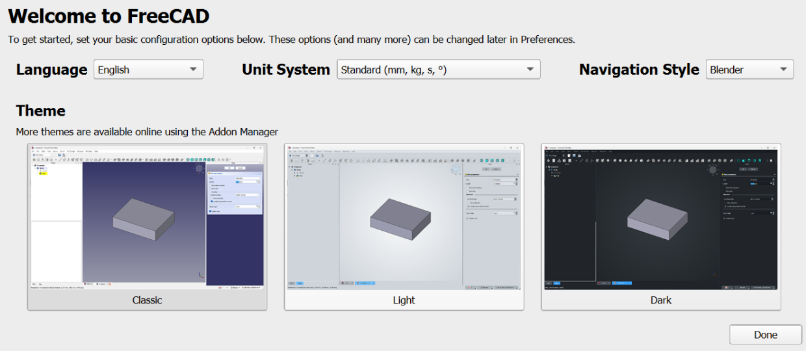
|
Basit bir ilk başlatma bileşeni eklendi ve yakın gelecekte genişletilecek.
Çekme isteği #13650
}
Montaj Çalışma Tezgahı
Daha fazla Montaj geliştirmesi
BIM Çalışma Tezgahı
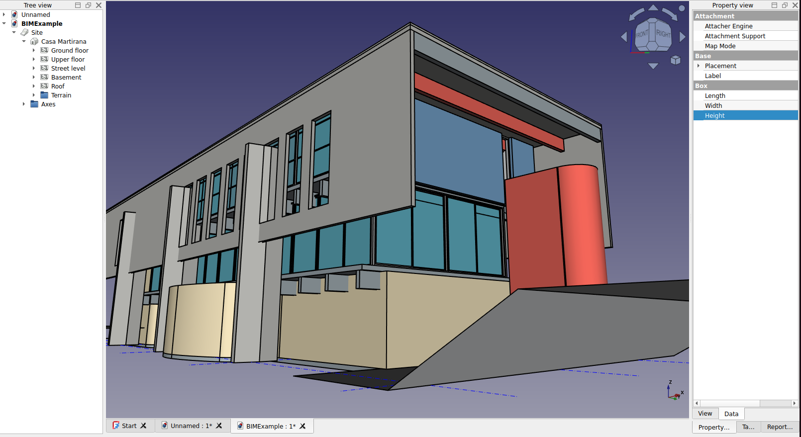
|
Arch Çalışma Tezgahı nihayet BIM ile birleştirilerek yeni BIM Çalışma Tezgahı oldu. Yeni BIM Çalışma Tezgahı, Arch'ten gelen tüm araçları koruyor, birkaç yenisini ekliyor ve tüm BIM ile mimari tasarım iş akışına birçok iyileştirme getiriyor; ayrıca daha iyi kurulum ve yönetim araçları ile daha iyi IFC desteği sunuyor. Çekme İsteği #13783
|
Daha fazla BIM iyileştirmesi
- NativeIFC de yeni BIM çalışma tezgahına birleştirildi. NativeIFC ile artık FreeCAD'de IFC dosyaları üzerinde yerel olarak çalışabilirsiniz; FreeCAD dosya biçimiyle herhangi bir dönüştürme olmadan. Daha fazlası için NativeIFC sayfasına bakın. Çekme İsteği #13783
- Arch Çatı nesnesi artık bir Alt Hacim özelliğine sahip. Bu, çatı için çıkarma hacmi olarak özel bir katı nesne kullanmanıza olanak tanır. Çekme İsteği #12346
- Ayrıca, katı bir nesneyi Temel olarak kullanan bir Arch Çatı nesnesi için uygun bir çıkarma hacmi artık kendiliğinden oluşturuluyor. Çizgi tabanlı bir çatı gibi, böyle bir çatı da Arch Remove ile bir binanın duvarlarından çıkarılabilir. Çekme İsteği #13221
- Arch Referans aracı yükseltildi: referans nesneleri artık bir parça seçmek zorunda kalmaksızın tüm dosya içeriğini kullanabiliyor; DXF ve IFC dosyaları için destek eklendi. Çekme İsteği #13287
- Yeni BIM çalışma tezgahı ayrıca projenizi kurmanıza veya nesnelerinizin IFC özelliklerini toplu olarak yönetmenize yardımcı olacak bir dizi yeni yönetim aracı sunar. Daha fazlası için BIM Çalışma Tezgahı sayfasına bakın.
- IfcOpenShell, FreeCAD'de IFC dosyalarıyla çalışmak için gereken bir başka açık kaynaklı yazılım, artık FreeCAD ekibi tarafından sunulan tüm resmi kurulum paketlerine dahil ediliyor. FreeCAD'i Linux dağıtımınız gibi bir üçüncü taraf sağlayıcıdan edindiyseniz ve IfcOpenShell henüz resmi bir paket olarak bulunmuyorsa, BIM çalışma tezgahı IfcOpenShell'i indirip kurmak için bir yardımcı araç sunar. Ve eğer IFC'ye hiç ihtiyacınız yoksa, BIM çalışma tezgahı IfcOpenShell olmadan da %100 çalışır.
CAM Çalışma Tezgahı
Further CAM improvements
- Rest machining was reimplemented to take input from the G-code of earlier operations (instead of using the internals of Area operations). This enables support for rest machining in Area operations after non-Area ones (most notably Adaptive). Pull request #11939
- G43 tool height compensation was added to the centroid CAM post-processor. Pull request #12652
- A Feed retract option was added to drilling operation settings for reaming and boring. Pull request #13254
- A new CAM simulator based on low-level OpenGL functions (faster and more precise) was added. Pull request #13884 and Pull request #15597
- The Vcarve operation was reworked to include features commonly available in other CAM software (Step down, Finishing pass, Head movement optimization and debugVoronoi method) making it possible to drastically improve the carved surface quality while increasing the carving speed up to 50%. Pull request #14093
- Machinability material models were added along with several materials. Pull request #14460, Pull request #15910 and Pull request #16021
Draft Workbench
- A justification option and several related properties have been added to Draft ShapeStrings. Pull request #10233
- Radial dimensions now only show a single arrow. Pull request #10655
- An Oblique Angle property has been added to Draft ShapeStrings. Pull request #10783
- Support for hyperlinks has been added. Hyperlinks, to local and remote files and URLs, in Draft Texts and Draft Labels can be opened from the their Tree view or 3D view context menu. Pull request #10878
- The Draft working plane code has been reworked. There is now a working plane per 3D view. Pull request #11010
- The history feature and the alignment options of the Draft SelectPlane command have been improved. Pull request #11062
- The behavior of the grid has been improved. Its visibility is now stored per 3D view. When switching to a different workbench all grids are hidden (a fine-tuning parameter is available to disable this). Pull request #11336
- The Draft preferences have been checked and improved. Some preferences have been added, obsolete preferences have been removed. The pages in the Preferences Editor have a new layout and show units where applicable. Restarting FreeCAD after changing a Draft preference is no longer required. Pull request #11379, Pull request #11503, Pull request #11512, Pull request #11550, Pull request #11579, Pull request #11585, Pull request #11677, Pull request #11694 and Pull request #16603
- A new Mouse delay setting has been added to the General Draft preferences. If it's non-zero (default is 1 s), after entering a number in one of the task panel input fields, mouse movement will be disabled, and thus won't change the value in the input field, for a given time in seconds. Setting a very large value practically disables mouse movement until the command is finished. Pull request #12624
- A button to quickly change the color of the grid has been added to the task panel of the Draft SelectPlane command. Pull request #13051
- A Fuse property has been added to Draft PointArrays, Draft PathArrays and Draft PathTwistedArrays. Pull request #13172 and Pull request #13191
- The button of the Toggle grid command now behaves like a toggle button, providing visual feedback of the grid status (visible or hidden). Pull request #14452
Further Draft improvements
FEM Workbench
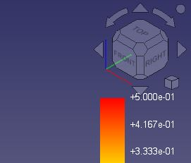
|
The position of the color legend labels was adjusted to make the top ones less likely to be covered by the navigation cube. The default font and color of the labels was changed to increase the visibility and preferences were added to allow label color and size modification.
Pull request #10552
|
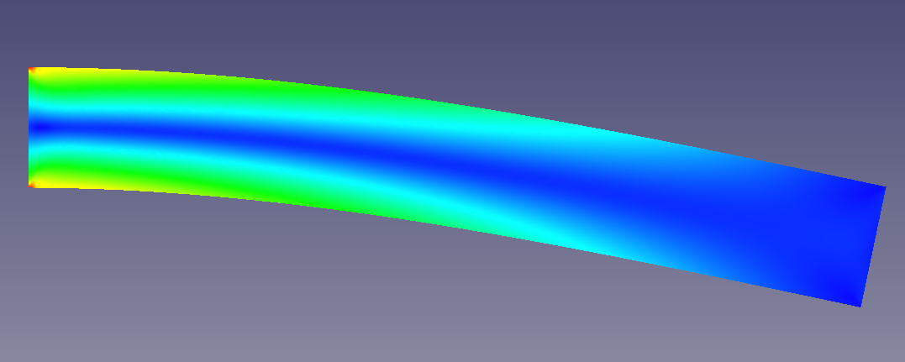
|
Support for 2D (plane stress, plane strain and axisymmetric) analyses was added for the CalculiX solver. They are configured in the same way as simulations with shell elements but there are some additional restrictions described on the aforementioned wiki page. The new Model Space option has to be set properly. Pull request #12562
|
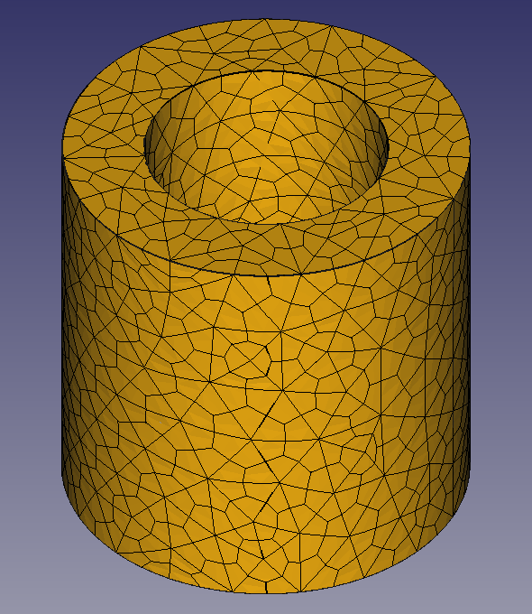
|
As the first step towards the support for hexahedral elements, their generation using Gmsh subdivision technique is now possible thanks to the new Gmsh property Subdivision Algorithm. It can also be used to create quadrilateral elements. Pull request #12698
|
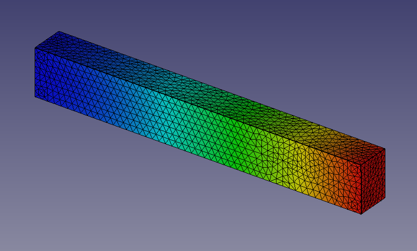
|
New View properties were added to the results pipeline objects. Mesh edge color and width can now be changed for the Surface with Edges display mode. Node size can be modified for the Nodes mode. There is also a transparency setting for all modes. Pull request #13066
|
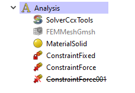
|
FEM constraints can now be suppressed (right-click on a constraint and select Suppress) and thus ignored by the solvers. This way, it's possible to modify the analysis setup without having to delete the currently not needed constraints. Pull request #12359
|
Further FEM improvements
- The Model → Constraints without solver menu was removed from the GUI. The listed constraints could not be used. Pull request #10457 and Pull request #10459
- The word "constraint" was removed from the names and descriptions of most features in the FEM workbench to ensure the correct nomenclature. The names were changed in such a way to fit the standards in the FEA industry and to make them intuitive for new users. Pull request #10519 and Pull request #10799
- New icons were added for Solver CalculiX Standard, Solver job control and Run solver calculations for greater intuitiveness. Pull request #10885
- Solver CalculiX (new framework) was removed from the GUI since it's unfinished and unnecessary at the moment. Its examples were also removed. Pull request #10823 and Pull request #12876
- The layout of some postprocessing tool task panels was improved to reduce the size of the horizontal space occupied by them. Pull request #11066
- The FEM ConstraintTemperature task panel was reworked to fix issues when editing this feature. Pull request #11126
- An old issue with the FEM PostFilterDataAlongLine being able to plot only magnitude, not vector components of a selected output variable was finally fixed. Pull request #10992
- The FEM ConstraintForce and FEM ConstraintPressure were overhauled to make them work better on the source code side. Pull request #10935 and Pull request #10923
- The FEM PostFilterDataAtPoint now has a PointSize property to set the size of the point symbol for more visibility. Pull request #11054
- For clarity, the FEM mesh region command was relabeled to FEM mesh refinement in the GUI (the command name remains unchanged). Pull request #11489
- The magnitude of gravity acceleration can now be changed using the properties of FEM ConstraintSelfWeight. Pull request #12044
- Contact and tie constraint were significantly improved. Contact stiffness now uses the correct unit and stick slope value can be specified for friction in contact. Moreover, clearance adjustment can be specified for contact while tie constraint may have adjustment enabled or disabled. Pull request #12133
- PaStiX and Pardiso were added to supported CalculiX matrix solvers. They are the fastest ccx solvers but the possibility of using them depends on the CalculiX binary version and available additional libraries. Pull request #12478
- The Beam Reduced Integration property (set to true by default) was added to CalculiX solver settings. It enables a reduced integration scheme for beam elements, making it possible to use the pipe beam section and eliminating accuracy issues in analyses with plasticity, among others. Pull request #12513
- The unfinished Nodes set tool was removed from the GUI. It couldn't be used. Pull request #12611
- The Check Mesh CalculiX analysis procedure now generates the results mesh properly. Pull request #12612
- It was clarified in the task panel that the diameter used by the pipe beam section is the outer diameter. Pull request #12609
- The Beam Shell Result Output 3D property of the CalculiX solver is now set to true by default to provide results for beam elements and provide meaningful results for shell elements. Pull request #12493
- Symbols of analysis features are now properly positioned when the Body (or Part container) has modified placement property. Pull request #12527
- Pressure load is now working properly for shells regardless of the mesh groups setting. This setting can be changed in the Preferences. Pull request #12437
- Simple hardening in FEM MaterialMechanicalNonlinear was renamed to isotropic hardening. Moreover, kinematic hardening was added. Pull request #12666
- Now geometric nonlinearity is not automatically activated and required when a nonlinear material is used. Those are independent forms of nonlinearity. Pull request #12703
- Mixed meshes consisting of both triangular and quadrilateral elements are now displayed properly in the results pipeline. Pull request #12740
- The Output Frequency property was added to CalculiX solver settings. It defines the frequency of output writing in increments. Pull request #12672
- Second-order quadrilateral elements can now be generated. Previously, the 2nd order Gmsh setting was generating 1st order quad elements because of the lack of a SecondOrderIncomplete Gmsh command which is now used internally. Those elements can also be used for 2D analyses. Pull request #12698 and Pull request #12774
- The determination of beam cross-section orientation was partially fixed. Due to a bug in the current release of CalculiX, there may still be issues with some orientations. Pull request #12833
- Cantilever FEM examples on the Start page were updated and a new one using 1D elements was added. Pull request #12871
- The format in which FreeCAD writes the force constraint is now compatible with the CalculiX format, eliminating rare issues with too long numbers. Pull request #12932
- It is now possible to export the results pipeline to the VTK format. Pull request #12987
- New incrementation control properties were added to CalculiX solver settings. Currently, in addition to the initial increment size and time period of the step, one can specify minimum and maximum increment size. Also, the Iterations Thermo Mech Maximum property was renamed to Iterations Maximum as it can now be used for static (non-thermomechanical) analyses too. Pull request #12662
- Default 2D element thickness was changed from 20 mm to 1 mm as it makes more sense in practice. Pull request #13077
- Many FEM icons were significantly improved to reduce their similarity and make it more clear what the tools do. Pull request #13130
- The Thermo Mech Type property was added to CalculiX solver settings. It makes it possible to switch a regular (coupled) thermomechanical analysis to uncoupled or a pure heat transfer one. Pull request #13296
- Min. Size property was added for Netgen mesher to prevent the generation of too small elements when meshing more complex geometries. Pull request #12794
- An old issue with a non-functioning symbol scale property for FEM constraints was finally fixed and the Scale property can now be used to adjust the size of symbols of a selected constraint. Pull request #13274
- Automatic scaling of FEM constraints was improved to better handle very small and very large objects. Pull request #13586
- Heat flux load now has a radiation heat flux mode to model surface radiation to ambient. Pull request #13466
- A few unused constraint symbol View properties were removed. Pull request #13569
- New view properties (with the main one being Color Mode) were added to FEM mesh objects so that custom color and transparency settings for meshes can be saved and restored. Pull request #13698
- Now only the last added filter under each results pipeline object is visible by default. Pull request #13820
- The task panel tips of several constraints were changed to actually reflect the rules of the geometry selection for those constraints. Pull request #13921 and Pull request #14002
- Support for heat flux results from thermomechanical analyses was added to the results pipeline. Pull request #14019
- The Section print feature was improved, adding support for heat flux and drag stress (not yet available as 3D fluid analyses with CalculiX haven't been implemented yet) results. Pull request #14046
- Body heat source can now be used with CalculiX and has two input modes - dissipation rate [W/kg] and total power [W]. Pull request #14417
- The rotation properties of the Local coordinate system were replaced with a single Rotation property for consistency. Pull request #14353
- An Erase Elements tool was added to make it possible to hide elements of a mesh selected with a polygon. Pull request #11492
- The three FEM examples on the Start page were replaced with one, containing all three variants of the cantilever beam model (1D, 2D and 3D) in Group containers. Pull request #15786
- The redundant Fix properties and checkboxes of the FEM ConstraintDisplacement were removed. Pull request #15531
- The behavior of the Cancel buttons in the task panels of the Gmsh and Netgen meshers was fixed so that they can be used to abort ongoing meshing which is particularly important when an initial guess regarding element size is too low. Moreover, the Netgen mesher was reimplemented, finally making it possible to use it on all systems, including Linux. Pull request #16515 and Pull request #16433
- The Quasi-structured Quad 2D algorithm missing in the Gmsh mesher was added to it along with other fixes. Pull request #15624
Material Workbench
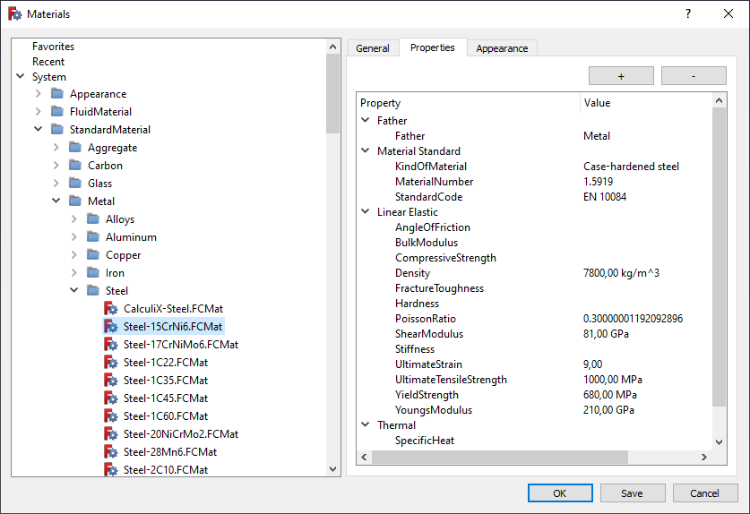
|
The material handling system, including the editor, has been completely reworked. Further improvements in this regard will follow.
Pull request #10690
|
Further Material improvements
- Dialogs to view the Appearance and Material properties of an object were added and available as Inspect Appearance and Inspect Material tools. Pull request #13967
Parça Tezgahı
Further Part improvements
- The Frenet property is now enabled by default for the Part Sweep tool to avoid a common rendering issue. Pull request #11590
- A new attachment mode called Intersection was added to the Engine Line. It finds the intersection of two planar faces. Pull request #12328
- The Part ProjectionOnSurface tool is parametric now. Pull request #13158
- Now all the Part icons use the blue theme and the primitives use the same icon for the toolbar and the tree. Pull request #14074
- The Create sketch command was added to the Part toolbar and menu since operations such as extrusion typically use sketches as input. Pull request #14318
- A new attachment mode called XY parallel to plane was added to the Engine Plane and Engine 3D. It results in an attachment similar to Object's XY but with the XY plane translated to pass through a selected vertex. In contrast to the Translate origin attachment mode, it does not move the origin in 2D/Sketcher. It can be used with origin planes, datum planes and sketches, but also with any object with a Placement property. Pull request #14372
PartDesign Workbench
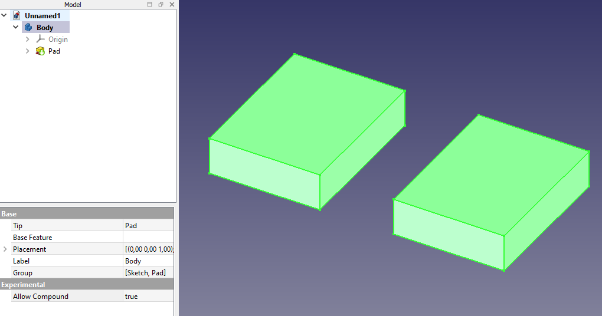
|
Experimental support for multiple solids within a Body was added. It can be enabled in the preferences (for new Bodies) or in the properties of an existing Body.
Pull request #13960
|
Further PartDesign improvements
- The Make thickness inwards option is now enabled by default for the Thickness tool. Pull request #7488
- Datum points now change color when highlighted or selected (like other datums). Pull request #12439
- Part Design icons where slightly improved for consistency. Pull request #13109
- A Suppressed property was added to temporarily disable a feature. Pull request #12096 and Pull request #12412
- The Part Design toolbars have been updated - datums and sketch-based actions are grouped now, Part CheckGeometry was added to the toolbar and menu, and the toolbars were split into individual ones to make it possible to rearrange them. Pull request #13833
- Now all the Part Design features use the same icons for the toolbar and the tree. Pull request #14074
- A new Transform body mode was added to Part Design mirror and pattern tools, making it possible to transform the whole base feature's shape instead of the individual tool shapes of additive and subtractive features. Pull request #12589
- The layout of the Hole tool dialog was improved. Pull request #14031
- The Migrate tool was removed from GUI since it was only useful for migrations between versions that are now highly outdated. Pull request #15196
Sketcher Workbench
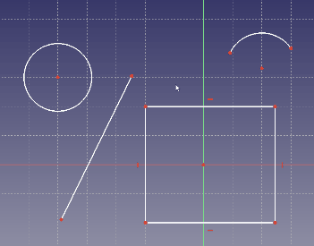
Click on the image if the animation does not start.
|
A contextual Dimension constraint tool was added to enable quick and intuitive dimensioning with a single versatile tool.
Pull request #9810
|
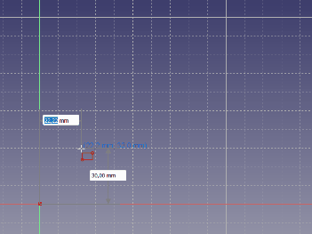
Click on the image if the animation does not start.
|
Tool parameters were added to allow dimensioning on the go (when drawing shapes). Depending on the preference setting On-View-Parameters, they can be disabled, reduced to dimensions only (no initial coordinates) or fully enabled. Moreover, modes were added for the shape tools. They can be selected using the M key or a drop-down list in the task panel. Some tools have additional settings in the form of checkboxes in the task panel and additional keyboard shortcuts. Currently, the new features are available for points, lines, arcs, ellipses, rectangles, polygons, slots and B-splines.
Pull request #11048, Pull request #11174 and following
|
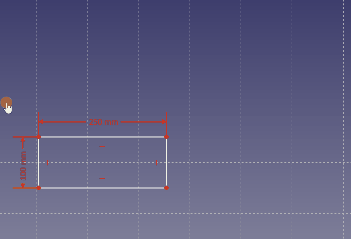
Click on the image if the animation does not start.
|
It is now possible to copy/cut and paste sketch geometry (with constraints) using typical keyboard shortcuts: Ctrl+C, Ctrl+X and Ctrl+V. Not only within a single sketch but also between different sketches or even different instances of FreeCAD. The geometry is copied in the form of Python commands so it can be used in other ways too (e.g. shared on the forum).
Pull request #11537
|
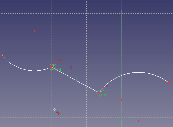
Click on the image if the animation does not start.
|
Tangency to B-spline edge was added, eliminating the need to use endpoints and various workarounds instead.
Pull request #11853
|
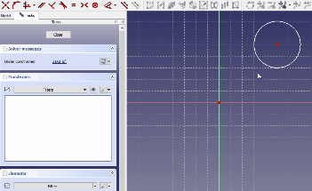
Click on the image if the animation does not start.
|
The Symmetry tool has been reworked. Now it works by preselecting the geometry and picking a line or point about which the geometry will be mirrored. A preview is shown and the behavior of the tool can be controlled through tool settings.
Pull request #11853
|
|
|
The rendering color of points is now different depending on whether it's a normal point/endpoint (white, now created by default when using the CreatePoint tool), a construction point/center point (blue) or a point coincident with another one (red).
Pull request #13098
|
Further Sketcher improvements
Spreadsheet Workbench
Further Spreadsheet improvements
TechDraw Workbench
Further TechDraw improvements
- Sections based on other sections now use the original (uncut) shape by default. This can be changed in section settings to use the previous section instead. Pull request #10281
- Cosmetic objects and centerlines can now be deleted by selecting them and pressing the Delete key. Previously, this resulted in the whole view being deleted. Pull request #10695 and Pull request #10813
- A new, more intuitive icon was added for the WeldSymbol tool. Pull request #10936
- The behavior of the point + edge mode of the LengthDimension was corrected. Pull request #10860
- A checked state was added for the ToggleFrame button so that a user can see whether the button is activated or not. Pull request #11240
- The behavior of the DecorateLine tool was improved. Now double-clicking a line invokes this tool. And line styles are correctly restored if the user presses Cancel. Previously, there was no difference between pressing OK and Cancel. Pull request #11188
- Color and transparency of faces can now be set per view. Pull request #11315
- Multiselection mode was added and can be enabled in Preferences. In this mode, multiple vertices, edges and faces can be selected by left-clicking on them, without having to keep the Ctrl key pressed. Pull request #11417
- ExtensionAreaAnnotation can now calculate areas of arbitrary faces. Pull request #11473
- Non-continuous lines will now follow the ISO/ANSI standards instead of a Qt line style. A new preference was added to select the standard. Pull request #11594
- The behavior of the AxoLengthDimension tool was improved. Now, when dimensioning edges parallel to the global coordinate system axes, the actual (3D) value is calculated automatically and inserted into the Format Spec property (as text). Pull request #11678
- The ExtensionPositionSectionView tool can now be used by selecting an edge in a section view and a vertex in the source view. Pull request #11797
- The ExtensionInsertRepetition tool, to insert a repeated feature count, was added. Pull request #12509
- Small but important usability improvements were made - double-clicking on the TechDraw page now enters this workbench and the TechDraw MoveView tool was replaced by simple drag and drop in the tree. The TechDraw ClipGroupAdd and TechDraw ClipGroupRemove tools were also replaced by tree drag and drop behavior. Pull request #13063
- The drawing templates are now automatically filled with available information (like date and title). Pull request #13005
- The Project shape tool was removed from TechDraw as it's inherited from the old Drawing workbench and has nothing to do with a TechDraw page. Pull request #13655
- The Insert View tool was improved so that it can handle more object types and settings. This allowed the following tools to be removed from the toolbar: SpreadsheetView, ArchView, Symbol, Image and ProjectionGroup. Pull request #13219
- Snapping was added to allow automatic alignment of views and dimensions. Snapping can be temporarily disabled with the Alt key modifier. Pull request #13659
- Handling of cosmetics was improved in various ways. Pull request #14216
- Many TechDraw icons were improved. Pull request #14873 and following
- The task panel of the SurfaceFinishSymbols tool was significantly improved visually. Pull request #16147
Import/Export
|
{kind=link}


{kind=link}
{kind=link}
{kind=link}
{kind=link}
{kind=link}
{kind=link}
{kind=link}
{kind=link}
{kind=link}
{kind=link}
{kind=link}
{kind=link}
{kind=link}
{kind=link}
{kind=link}
{kind=link}
{kind=link}
{kind=link}
{kind=link}
{kind=link}
{kind=link}
{kind=link}
{kind=link}
{kind=link}
{kind=link}
{kind=link}
{kind=link}
{kind=link}
{kind=link}
{kind=link}
{kind=link}
{kind=link}
{kind=link}
{kind=link}
{kind=link}
{kind=link}
{kind=link}
{kind=link}
{kind=link}
{kind=link}
{kind=link}
{kind=link}
{kind=link}
{kind=link}
{kind=link}
{kind=link}
{kind=link}
{kind=link}
{kind=link}
{kind=link}
{kind=link}
{kind=link}
{kind=link}
{kind=link}
{kind=link}
{kind=link}
{kind=link}